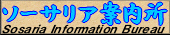
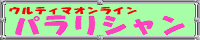
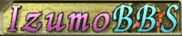
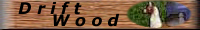
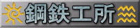

ソーサリア案内所

Lycaeum.net
ウルティマ オンライン
パラリシャン
Ciel@UO
Ultima Online Index
|
日本公式サイト |
Ultima Online日本の公式ページです。基本的な情報やサポートなどについてこちらで確認できます。 |
|
Yamato EM公式サイト
Sakura EM公式サイト Asuka EM公式サイト Hokuto EM公式サイト Wakoku EM公式サイト Izumo EM公式サイト |
日本シャードのEM（Event Moderator）サイトです。
各シャードのEM主催イベントに関する情報などが掲載されます。 |
|
アメリカ公式サイト |
Ultima Onlineの公式ページで、最新の情報が掲示されます（英語）。 |
|
Feedback Form（米公式内） |
Ultima Onlineのフィードバックを送ることができます（英語）。 |
| UO Stratics | Ultima Onlineの最新情報および様々なカテゴリの掲示板があります（英語）。 |
|
 ソーサリア案内所 |
Ultima Onlineの最新情報や初心者用の案内についてまとめられている情報系サイトです。 |
| ブリタニア資料館 | Ultima Onlineの最新情報や開発サイドのコメントなどについてまとめられている情報系サイトです。 |
|
Lycaeum.net |
Ultima Onlineの最新情報や日本シャードのイベントについてまとめられている情報系サイトです。 |
|
 ウルティマ オンライン パラリシャン |
最新の情報に関していろいろな情報が集まっていくサイトです。スキルやイベントなどに関するデータも豊富です。 |
|
Ciel@UO |
UO情報・データ・解説から、瑞穂&無限のキャラ別日記まで、 分かり易くてアットホームなUO総合サイトです。 |
|
Ultima Online Index |
非常に多くの登録サイトがあるUO-Linkサイトです。ここで大抵のページは見つけられると思います。 |
| UOモンスター協会 | Ultima Online内の様々な生物のデータがまとめられているサイトです。 |
|
UO Guild Full Moon |
UO SA(Stygian Abyss)について、クエストやシステムなどの解説を行っています。 |
|
うおえん |
Ultima Onlineのガーデニングおよび植物についてまとめられているサイトです。 |
|
乞食結社 |
Ultima Onlineの物乞い（Begging）スキルについて解説しているサイトです。 |
|
Housing＠UO |
Ultima Onlineの家（カスタマイズ・内装）についてのサイトです。 |
| 素晴らしき毒の世界 | 主に、戦闘系のスキル（魔法系、戦士系）全般の解説を行っているサイトです。 |
|
バルクオーダー 報酬結果解析所 |
鍛冶・裁縫Bulk Orderの報酬リストが掲載されています。 |
|
＠おーるふぉろーみー |
テイム系スキル（Animal taming, Animal lore, Veterinary）について詳しく書かれています。 |
| 飛鳥市場 | Asuka専用の取引掲示板のあるサイトです。 |
| Ultima Online 取引所 | Yamato専用の取引掲示板のあるサイトです。 |
| 信乃助's HOMEPAGE | Hokuto専用の取引掲示板のあるサイトです。 |
| Wakoku マーケット | Wakoku専用の取引掲示板のあるサイトです。 |
|
 Izumo BBS |
Izumo専用の取引掲示板のあるサイトです。 |
|
Mizuho BBS |
Mizuho専用の取引掲示板のあるサイトです。 |
|
Sakura BBS |
Sakura専用の取引掲示板のあるサイトです。 |
 MUGEN BBS |
MUGEN(日本上級シャード)専用の取引掲示板のあるサイトです。 |
| ギルド227 [Midnight Explorers] | Wakokuシャードで活動しているギルド227 [Midnight Explorers] のサイトです。 |
| Strange Storage | こすもすさんのサイトです。Ultima Onlineに関する色々な小ネタをまとめています。 |
|
妄想ブリタニア |
MIYAさんのUO漫画サイトです。最新ニュースなどの情報も充実しています。 |
|
 Drift Wood |
AsukaのSeedさんのHPです。生産スキルのスキルあげについて書かれています。また、 ギルドＤ＊Ｗのページでもあります。 |
|
Aki's Magic Shop |
Aki(Izumo)さんのUO関連サイトです。Khaldunのパズル箱をやってみたい方はまずここのシミュレーターに挑戦です! |
| raieruの趣味のページ | AsukaのRaieruさんのサイトです。UOAM用の木材アイコンを配布しております。 |
|
Shop Silky Website |
YamatoトラメルにあるPCベンダーショップです。NPC系色布について詳しい画像データがあります。 |
|
 鋼鉄工所 |
Mizuhoで活動しているギルドH/T(鋼鉄工所)のギルドページです。 |
| 閑人工房 | 鍛冶BOD査定用のExcelシートを作成しております。Deedの販売をしている方々に使っていただけたらと思います。 |
|
ドンキホーテ |
YamatoトラメルにあるPCベンダーショップです。一通りの製品が揃っている大型店です。 |